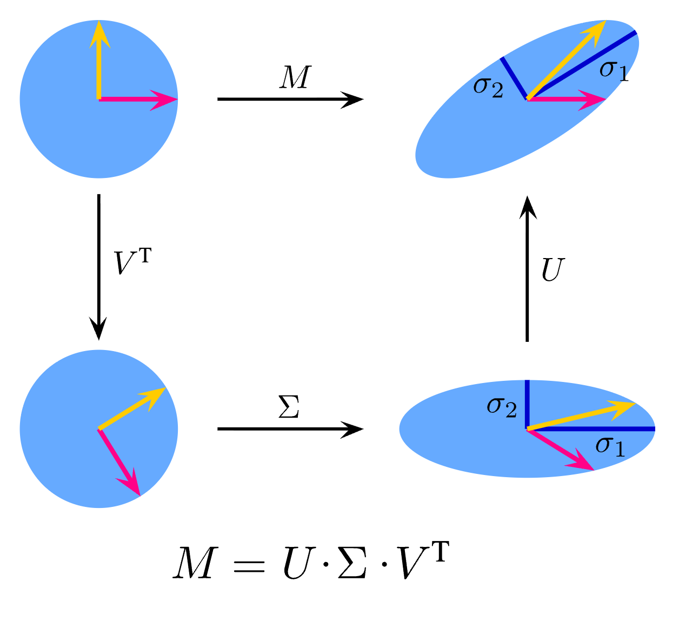
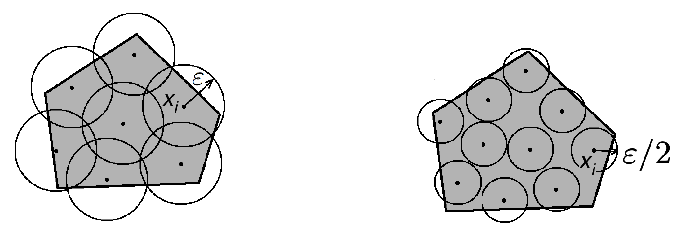

These notes support STAT 709 at the University of Wisconsin–Madison. Use them alongside the cited textbooks; corrections and questions are welcome.
Finite directions. A matrix acts in infinitely many directions, but a finite net lets us control all those directions at once.
Applications. We review singular values and norms, derive an operator-norm bound for independent subgaussian entries, and apply the same strategy to empirical covariance matrices.
Dimensions. Keep track of which dimension belongs to the observations and which to the matrix; the optional Gaussian result gives sharper spectral edges.
Recap from earlier lecturesFrom Lectures 1, 14 and 15: directions and concentration · 1 min
Reminder only: this block introduces no new exam requirements.
Uniform spherical directions. Uniform spherical directions have subgaussian one-dimensional projections despite their dependent coordinates. Used in Section 3.
Norm concentration. Independent unit-variance subgaussian coordinates give \(\|X\|_2\) near \(\sqrt n\). Used in Section 3.
Bernstein and union bounds. Control one direction, then account for all directions in a finite set. Used in the proofs of Theorems 1 and 2; the auxiliary net lemma is optional.
SVD and operator norm. The largest singular value is the largest stretch over unit inputs. Used in Section 1.
An asterisk in a topic heading marks optional material; the priority labels specify the reading scope.
Learning goals
Relate singular values to operator and Frobenius norms.
Use the operator-norm bound for a subgaussian random matrix.
Interpret the sample-size and dimension dependence of covariance estimation.
Choose a discretization radius; the net lemma and its proof remain optional.
For convenience, we refer to the Euclidean norm as \(\left\|\cdot\right\|\) and \(\left\|\cdot\right\|_2\). As before, we use \(c\) or \(C\) to denote a positive absolute constant. We write \(c_K\) or \(C_K\) to denote a scalar that depends only on \(K\). In particular, if \(K\) is a constant, then \(c_K\) and \(C_K\) are both constants. We denote by \(\mathbb{S}^{n-1}\) the unit sphere: \(\{x\in \mathbb{R}^n: \left\|x\right\|= 1\}\).
1. Some linear algebra
1.1. A recap of singular value decomposition (SVD)
Factorization. Let \(A\in \mathbb{R}^{m\times n}\) be an \(m\times n\) matrix. It has a decomposition \(A= \sum_{i=1}^r\sigma_i u_iv_i^\top=U\Sigma V^\top\), where \(r=\rank(A)\), \(U=[u_1,\dots,u_r]\in\mathbb{R}^{m\times r}\) has orthonormal columns, \(V=[v_1,\dots,v_r]\in\mathbb{R}^{n\times r}\) has orthonormal columns, and \(\Sigma = \diag(\sigma_1,\dots,\sigma_r) \in\mathbb{R}^{r\times r}\).
Ordering. We use \(\sigma_1\ge \sigma_2\ge \dots\ge \sigma_r>0\) by convention.
\(\sigma_i=\sqrt{\lambda_i(AA^{\top})}= \sqrt{\lambda_i(A^\top A)}\), i.e., the square root of the \(i\)-th largest eigenvalue of \(AA^\top\) or \(A^\top A\); \(u_i\) and \(v_i\) are corresponding eigenvectors of \(AA^\top\) and \(A^\top A\), respectively. We have \(A^\top u_i=V \Sigma U^\top u_i=\sigma_i v_i\). Similarly \(Av_i= \sigma_i u_i\).
If \(A\) is symmetric (\(A=A^\top\)), then the singular values are the absolute eigenvalues, sorted in descending order.
\(\sigma_1(A)= \max_{u:\left\|u\right\|=1} \left\| Au\right\|\) is called the operator norm of \(A\).


Revisit the SVD construction in Lecture 1 to connect these three steps to the matrix factorization.
1.2. Matrix norms
There are many different matrix norms we encounter. Here are a few common norms. Let \(A \in \R^{m \times n}\) denote a generic matrix.
Frobenius norm \(\left\|A\right\|_F = (\sum_{ij}A_{ij}^2)^{1/2}\). Essentially, we treat \(A\) as a vector of length \(mn\) and then use the Euclidean norm. Frobenius norm can be expressed using singular values \(\left\|A\right\|_F^2=\sum_{j=1}^r[\sigma_j(A)]^2\).
Operator norm \(\left\|A\right\|_{\mathrm{op}} = \sigma_1(A)\), and by convention, simply \(\left\|A\right\|\) unless specified otherwise. From the functional analysis perspective, we view \(A\) as a linear operator that maps a vector to another vector in the Euclidean space, and the induced norm is the operator norm. It can be shown that \(\left\|A\right\|_{\mathrm{op}} = \max_{u:\left\|u\right\|_2=1} \left\| Au\right\|_2\).
Matrix \(p\)-norm \(\left\|A\right\|_{p} = \max_{u:\left\|u\right\|_p=1} \left\| Au\right\|_p\). It generalizes the operator norm \(p=2\) to more general \(p\); in fact, it is the induced operator norm for \(\ell^p\) spaces.
Max norm \(\left\|A\right\|_{\max} = \max_{ij}|A_{ij}|\). Essentially, we treat \(A\) as a vector of length \(mn\) and consider the usual \(\ell^\infty\) norm.
See also Wiki for a comprehensive comparison.
Operator norm.
The operator norm is the largest singular value and controls the largest stretch over all unit input vectors. The Frobenius norm is the square root of the sum of squared singular values.
See Exercise 1 in Section 7 for the full statement and complete solution.
1.3. Covering and packing numbers
Let \((T,d)\) be a metric space, then consider a subset \(K\subset T\) and some \(\epsilon>0\), then a subset \(\mathcal{N}\subset K\) is called an \(\epsilon\)-net of \(K\) if every point \(x\) in \(K\) is within distance \(\epsilon\) of a point in \(\mathcal N\), i.e. \(\forall x\in K\), \(\exists x_0\in \mathcal{N}\) such that \(d(x_0,x)\le\epsilon\). In other words, \(K\) is covered by balls of radius \(\epsilon\) centered at every point in \(\mathcal{N}\).
The covering number \(N(K,d,\epsilon)\) is the number of points in the smallest (i.e. containing the fewest points) \(\epsilon\)-net of \(K\), i.e., the least number of points that are needed to cover \(K\) with \(\epsilon\)-balls among all possible \(\epsilon\)-nets.
Covering number of Euclidean unit ball \(B_2^n=\{x\in \mathbb{R}^n\mid \left\|x\right\|_2\le 1\}\) in \(\mathbb{R}^n\). \((\frac{1}{\epsilon})^n\le N(B_2^n,d_2,\epsilon)\le (1+\frac{2}{\epsilon})^n\) for \(0<\epsilon\le1\), here \(d_2(x,y)=\|x-y\|_2\) is Euclidean distance.
The upper bound follows from the packing proof in Exercise 6; the lower bound follows because covering a unit ball requires total covering-ball volume at least its volume. The same packing argument, with centers constrained to the sphere, also gives a sphere net of size at most \((1+2/\epsilon)^n\). See [2] (Section 4.2).
Low priority — not examined: Discretization lemma
If \(0<\epsilon<1\) and \(\mathcal{N}\) is an \(\epsilon\)-net of the unit sphere \(\mathbb{S}^{n-1}\), then \[\sup\limits_{x\in \mathcal{N}} \left\|Ax\right\|_{2}\le \left\|A\right\|\le \frac{1}{1-\epsilon}\sup\limits_{x\in \mathcal{N}} \left\|Ax\right\|_2.\] If \(0<\epsilon<1/2\) and in addition there is an \(\epsilon\)-net \(\mathcal{M}\) of \(\mathbb{S}^{m-1}\), then \[\sup_{x\in \mathcal{N},y\in \mathcal{M}}\left\langle Ax,y\right\rangle\le \left\|A\right\|\le \frac{1}{1-2\epsilon}\cdot \sup_{x\in \mathcal{N},y\in \mathcal{M}}\left\langle Ax,y\right\rangle.\]
Proof. \(\forall x\in \mathbb{S}^{n-1}\), we find \(x_0\in \mathcal{N}\) s.t. \(\left\|x-x_0\right\|\le \epsilon\). Pick \(x\) to be the top singular vector \(v_1\), then we have \[\left\|Ax-Ax_{0}\right\|\le \left\|A\right\|\cdot \left\|x-x_0\right\|\le \epsilon \left\|A\right\|,\] \[\left\|Ax_0\right\|\ge \left\|Ax\right\|-\left\|Ax-Ax_{0}\right\|\ge \left\|A\right\|-\epsilon\left\|A\right\|,\] \[\left\|A\right\|\le \frac{1}{1-\epsilon}\left\|Ax_0\right\|.\]
In addition we pick \(y=Ax/\|Ax\|\in\mathbb S^{m-1}\) such that \(\langle Ax,y\rangle=\|Ax\|=\|A\|\) (the zero matrix is immediate). Then take \(y_0\in \mathcal{M}\) such that \(\left\|y-y_0\right\|\le \epsilon\). By \(\left\langle Ax,y\right\rangle-\left\langle Ax_0,y_0\right\rangle=\left\langle Ax,y-y_0\right\rangle+\left\langle A(x-x_0),y_0\right\rangle\), we follow the above steps and get the desired result. ◻
This lemma says that if we don’t care about the factor (usually \(1/(1-\epsilon)\) is a constant), then the operator norm \(\|A\| = \sup_{\|u\|=1}\|Au\|\) is approximately the same as a discretized version.
Instructor’s NoteCheck a finite set of directions
A net is like checking a surface on a fine grid. We first control the grid points by probability bounds, then pay a deterministic approximation factor to fill the gaps. Making the grid finer improves that factor but increases the number of events in the union bound.
Low priority — not examined: Discretize directions
An epsilon-net approximates every unit direction within distance epsilon. Net cardinality is exponential in dimension, and its logarithm competes with concentration in uniform matrix bounds.

See Exercise 2 in Section 7 for the full statement and complete solution.
2. Operator norm of a subgaussian random matrix
The goal is to control the largest stretch of a random matrix. For independent centered subgaussian entries with norm bounded by \(K\), the relevant upper-bound scale is \(K(\sqrt m+\sqrt n)\); the theorem below states the failure probability and the additional deviation term explicitly.
We sometimes say \(A\in \mathbb{R}^{m\times n}\) has independent subgaussian entries if all the entries \((A_{ij})\) are jointly independent, \(\mathbf{E} A_{ij}=0\), and subgaussian.
Let \(A\in \mathbb{R}^{m\times n}\) have independent subgaussian entries. \(K=\max_{i,j} \left\|A_{ij}\right\|_{\psi_2}\). For any \(t>0\), \(\left\|A\right\|\le CK(\sqrt{m}+\sqrt{n}+t)\) with probability at least \(1-2e^{-t^2}\) for a certain constant \(C\).
We need the following lemma, which is in fact an equivalent form of Hoeffding’s inequality.
Let \(X_1,\dots,X_n\) be independent subgaussian random variables with \(\mathbf{E} X_i=0\), then \(\sum_{i=1}^n X_i\) is also subgaussian with \[\left\|\sum_{i=1}^nX_i\right\|^2_{\psi_2}\le C\sum_{i=1}^n \left\|X_i\right\|^2_{\psi_2}.\]
Proof. Of Theorem 1.
Use the displayed net bound below as a tool; the general approximation lemma and its proof above are optional. Pick \(\epsilon=\frac{1}{4}\), let \(\mathcal{N},\mathcal{M}\) be \(\epsilon\)-nets of \(\mathbb{S}^{n-1}\), \(\mathbb{S}^{m-1}\) respectively such that \(\left|\mathcal{N}\right|\le9^n\), \(\left|\mathcal{M}\right|\le9^m\). (Note: \(\mathbb{S}^{n-1}\) is the unit sphere: \(\{x\in \mathbb{R}^n\mid \left\|x\right\|= 1\}\).) We can check from Lemma 1 that \[\left\|A\right\|\le 2\max_{x\in \mathcal{N},y\in \mathcal{M}}\left\langle Ax,y\right\rangle,\] where \(\left\langle \cdot,\cdot\right\rangle\) is the inner product notation (namely \(\left\langle z,w\right\rangle=z^{\top}w\)). Now we will have to control \(\left\langle Ax,y\right\rangle\) for each \(x\in \mathcal{N}, y\in \mathcal{M}\) with the preceding lemma. Now apply Lemma 2 to \(\left\langle Ax,y\right\rangle\) and we have \[\left\|\left\langle Ax,y\right\rangle\right\|^2_{\psi_2} = \Big\| \sum_{i,j} A_{i,j} x_j y_i \Big\|_{\psi_2}^2 \le CK^2\sum_{i,j} x_j^2y_i^2=CK^2\left\|x\right\|^2\left\|y\right\|^2=CK^2.\] So by the tail bound (namely an equivalent definition of subgaussian variables), \(\mathbf{P}(\left\langle Ax,y\right\rangle\ge u)\le 2e^{-cu^2/K^2}\) for any \(u>0\). To control all net pairs at once, use the union bound inequality \(\mathbf{P}(\cup_{k} B_k)\le\sum_k\mathbf{P}(B_k)\), we find \[\mathbf{P}(\max_{x,y} \left\langle Ax,y\right\rangle\ge u)\le \sum_{x,y} \mathbf{P}(\left\langle Ax,y\right\rangle\ge u)\le 9^{n+m}\cdot 2e^{-cu^2/K^2}.\] If we pick \(u=CK(\sqrt{n}+\sqrt{m}+t)\) with large enough \(C\) such that \(cu^2/K^2\ge 3(n+m)+t^2\). Thus \[\mathbf{P}\big(\max_{x,y} \left\langle Ax,y\right\rangle\ge u \big)\le 9^{n+m}2e^{-3(n+m)-t^2}\le 2e^{-t^2}.\] This leads to \(\mathbf{P}(\left\|A\right\|\ge 2u) \le 2e^{-t^2}\). ◻
The theorem supplies an upper bound at scale \(K(\sqrt m+\sqrt n)\). A matching lower bound needs nondegenerate variances; subgaussianity alone allows the zero matrix. For i.i.d. centered entries with variance \(\sigma^2>0\), bounded standardized fourth moments and bounded \(K/\sigma\), the Frobenius calculation below gives the complementary lower bound. Assume \(n\ge m\) without loss of generality; together these estimates put the largest singular value at scale \(\sigma\sqrt n\).
Average squared entries. Assuming \(\sigma^2=\mathbb{E} A_{ij}^2\), we expect \(\left\|A\right\|_{F}^{2}\) to be close to its mean, that is, \[\frac{\left\|A\right\|_F^2}{nm\sigma^2}=\frac{\sum_{i,j}A_{ij}^2}{nm\sigma^2}\stackrel p\longrightarrow1, \qquad \text{as}~ n \to \infty\] Since \(\left\|A\right\|_{F}^{2} = \sum_{j=1}^m [\sigma_j(A)]^2\), we have \(m^{-1}\sum_{k=1}^m\sigma_k^2(A)=(1+o_p(1))n\sigma^2\).
Singular-value scale. Thus the root-mean-square singular value is \((1+o_p(1))\sigma\sqrt n\).
Comparison. The largest singular value is at least this quantity, while the operator-norm theorem gives the matching upper scale. This calculation concerns the root mean square, not the arithmetic average.
For i.i.d. nondegenerate entries with controlled subgaussian norm relative to their standard deviation, lower singular-value theorems also put the smallest singular value on this scale when the aspect ratio stays away from one. This conclusion needs those extra hypotheses; the upper-bound theorem by itself does not prove it.
3. Statistical application: covariance estimation
The operator norm is the largest singular value and controls the largest stretch over all unit input vectors. The Frobenius norm is the square root of the sum of squared singular values.
Let \((T,d)\) be a metric space, then consider a subset \(K\subset T\) and some \(\epsilon>0\), then a subset \(\mathcal{N}\subset K\) is called an \(\epsilon\)-net of \(K\) if every point \(x\) in \(K\) is within distance \(\epsilon\) of a point in \(\mathcal N\), i.e. \(\forall x\in K\), \(\exists x_0\in \mathcal{N}\) such that \(d(x_0,x)\le\epsilon\). In other words, \(K\) is covered by balls of radius \(\epsilon\) centered at every point in \(\mathcal{N}\).
Suppose \(X_1,\dots, X_n\) are i.i.d. random vectors with \(\E X_i=0\) and covariance \(\Sigma=\mathrm{Cov}(X_i)\). By the law of large numbers, with dimension \(p\) being fixed, we have \[\frac{1}{n}\sum_{i=1}^n X_iX_i^\top\stackrel{p}{\longrightarrow}\Sigma\qquad \text{as }n\to\infty.\]
What is the property of the empirical covariance matrix \(n^{-1}\sum_{i=1}^n X_iX_i^\top\) without assuming an asymptotic regime? The following theorem gives us an estimation error bound involving \(p\).
Assume \(X_0\in\R^p\) has mean zero and covariance \(\Sigma\), and is subgaussian relative to its covariance: \(\|\langle X_0,u\rangle\|_{\psi_2}\le K\sqrt{u^\top\Sigma u}\) for every \(u\in\R^p\). Suppose that \(X_1,\dots, X_n\) are i.i.d. copies of \(X_0\) and \(X=[X_1,\dots, X_n]^T\in \mathbb{R}^{n\times p}\). Then for every \(t\ge 0\), with probability at least \(1-2e^{-c_Kt^2}\),
\[\left\|\frac{1}{n}X^\top X-\Sigma\right\|\le \max\{\delta,\delta^2\}\left\|\Sigma\right\| \text{ where } \delta = C_K\sqrt{\frac{p}{n}}+\frac{t}{\sqrt{n}}.\]
(1)Proof.
Finite net. First take \(\Sigma=I_p\). A \(1/4\)-net \(\mathcal N\) of the unit sphere has at most \(9^p\) points.
Error matrix. Set \(B=X^\top X/n-I_p\).
One direction. For every fixed unit \(u\), the centered squares \(\langle X_i,u\rangle^2-1\) have subexponential norms bounded by \(C_K\). Bernstein therefore gives \[\PR(|u^\top Bu|>s)\le2\exp[-c_K n\min(s^2,s)].\]
For symmetric \(B\), \(\|B\|\le2\max_{u\in\mathcal N}|u^\top Bu|\); Exercise 5 proves this version of the net argument. A union bound thus gives \[\PR(\|B\|>2s)\le2\exp[p\log9-c_Kn\min(s^2,s)].\] Put \(r=(p+t^2)/n\) and \(s=C_K(\sqrt r+r)\), increasing \(C_K\) to absorb \(p\log9\). This gives the claimed form \(\max(\delta,\delta^2)\) after adjusting constants. For general positive definite \(\Sigma\), set \(Z_i=\Sigma^{-1/2}X_i\). The stated relative assumption gives the same \(K\) for \(Z_i\). Since \[\hat\Sigma-\Sigma=\Sigma^{1/2}(n^{-1}\textstyle\sum_iZ_iZ_i^\top-I)\Sigma^{1/2},\] its norm is at most \(\|\Sigma\|\) times the whitened error. If \(\Sigma\) is singular, every direction in its kernel has zero projection almost surely; restrict to its range and apply the argument there, using rank at most \(p\). ◻
Examples of subgaussian random vectors.
A random vector is subgaussian iff \(\langle X, u \rangle\) is subgaussian for all unit vectors \(u\). Some examples of subgaussian vectors:
\(X\sim N(0,I_n)\);
\(X\sim \Unif(\{\pm 1\}^n)\);
\(X\sim \Unif(\sqrt{n}\, \mathbb{S}^{n-1})\).
For independent normal coordinates, every unit projection is standard normal. For independent Rademacher coordinates, Hoeffding’s inequality gives a uniform subgaussian bound on unit projections. As explained in the previous lecture, the third distribution is not a product measure, but it has Gaussian-like fixed projections, as explained by the coupling if \(X \sim \Unif(\sqrt{n}\, \mathbb{S}^{n-1})\) then \[X \stackrel{d}{=} \sqrt{n}\,\frac{G}{\left\|G\right\|}, \qquad \text{where}~ G \sim N(0,I_n),\] and \(\left\|G\right\|\) concentrates around \(\sqrt{n}\).
Relative covariance error.
Under the stated relative subgaussian condition, covariance error scales with \(\|\Sigma\|_{\rm op}\) and \(\sqrt{p/n}+p/n\). Uniform tail and covariance bounds are needed when converting this rate into a growing-dimension consistency claim.
See Exercise 3 in Section 7 for the full statement and complete solution.
3.1. Discussion: Effects of dimensions
For simplicity, assume the common mean \(\mu:=\E X_i\) is zero. Denote \(X=[X_{1},X_{2},...,X_{n}]^{T}\in\R^{n\times p}\), and then empirical covariance is given by \(\hat{\Sigma}=\frac{1}{n}X^{T}X=\frac{1}{n}\sum\limits_{i=1}^{n}X_{i}X_{i}^{T}\). Classical theory says that if \(p\) is fixed, then \(\hat{\Sigma} \stackrel{p}{\rightarrow} \Sigma\) as \(n\to \infty\). To understand how dimension \(p\) affects estimation consistency, below we treat \(p\) as an arbitrary number.
Assume also uniformly bounded coordinate fourth moments, as follows from the uniform subgaussian assumptions above. Recall \(\left\|A\right\|_F=(\sum_{i,j}A_{ij}^2)^{1/2}\); independence across observations gives \[\mathbb{E} \Big[ \left\|\hat{\Sigma}-\Sigma\right\|^{2}_{F} \Big]=\frac{1}{n}\sum_{j,k=1}^{p}\Var\big((X_{i})_{j}(X_{i})_{k}\big)\leq \frac{Cp^{2}}{n}.\] In particular, this upper bound cannot be improved for simple cases like \(X_{i}\sim\mathcal{N}(0,I_{p})\). Since \(\left\|\hat \Sigma - \Sigma\right\|_F^2 = \sum_{j \le p} [\sigma_j(\hat \Sigma - \Sigma)]^2\) where \(\sigma_j\) denotes the \(j\)-th singular value, the above upper bound is equivalent to \[\mathbb{E}\left\{\frac{1}{p}\sum\limits_{j=1}^{p}\left[\sigma_{j}(\hat{\Sigma}-\Sigma)\right]^{2}\right\}\leq\frac{Cp}{n}.\] The part inside the expectation is the average squared singular value. By Theorem 2, \(\|\hat\Sigma-\Sigma\|=O_P(\sqrt{p/n}+p/n)\) when \(K\) and \(\|\Sigma\|\) are uniformly bounded. This comparison suggests the scale of the error; the following Gaussian example establishes inconsistency in probability. Gaussian random-matrix limits below give a concrete sharpness example.
Inconsistency of covariance estimation.
As before, in order to study the asymptotic behavior, let us imagine there is a limiting process where we collect more and more data, and the dimension \(p_n\) depends on \(n\). We emphasize the dependency on \(n\) and write \(\Sigma_n\) and \(\hat \Sigma_n\).
We have the following conclusions:
If \(p_n/n\to0\), with uniformly bounded relative subgaussian constant and \(\sup_n\|\Sigma_n\|<\infty\), then \(\|\hat\Sigma_n-\Sigma_n\|\to_p0\). Choose \(t_n\to\infty\) slowly enough that \(t_n/\sqrt n\to0\) in the covariance bound.
For a concrete inconsistent case, take \(X_i\sim N(0,I_{p_n})\) and \(p_n/n\to c>0\). The Gaussian spectral-edge limit is \(\lambda_{\max}(\hat\Sigma_n)\to(1+\sqrt c)^2\) almost surely. Hence \(\liminf\|\hat\Sigma_n-I\|\ge2\sqrt c+c>0\). This uses the random-matrix limit discussed in Lecture 17. A lower bound on \(\E\|\hat\Sigma-\Sigma\|^2\) alone would not establish inconsistency in probability.
Moreover, consider a more ‘extreme’ scenario where the dimension is larger than the sample size, then we actually have a deterministic result
If \(p>n\), then \(\mathrm{rank}(\hat{\Sigma})\leq n\) (why?), which means that \(\hat\Sigma\) is singular: its range lies in the span of the \(n\) observation vectors. The best rank-\(n\) approximation bound (the Eckart–Young theorem) then gives the following always holds \[\left\|\hat{\Sigma}_{n}-\Sigma_{n}\right\|\geq\min\limits_{M:\ \mathrm{rank}(M)\leq n}\left\|M-\Sigma_{n}\right\|=\sigma_{n+1}(\Sigma_{n}).\]
For the second bullet point, we actually have a stronger result for many distributions: there exists a constant \(C_{0}>0\) such that \(\PR(\left\|\hat{\Sigma}_{n}-\Sigma\right\|\geq C_{0})\rightarrow 1.\)
Usually, \(p_{n}/n\rightarrow0\) is often considered the “low-dimensional” regime where consistency generally holds under regularity conditions. In particular, \(p_{n}\equiv p\) is the classical “fixed-dimensional” or “large-sample” regime where the LLN and the CLT are valid.
In contrast, \(p_{n}/n\rightarrow c>0\) is the “high-dimensional” regime where new phenomena exist.
Additional structure. The obstacles posed by high dimensionality can be overcome if we know additional structure.
Sparse covariance. For example, if we know \(\Sigma_n\) is a sparse matrix, meaning that it contains only a few nonzero entries, then we can recover consistency by denoising the empirical covariance matrix [1]. Developing regularized methods is very typical of high-dimensional statistical research, as we will see later in this course.
See Exercise 4 in Section 7 for the full statement and complete solution.
4. Gordon’s theorem*
Low priority — not examined: Gordon’s theorem
If the distribution is standard normal instead of the general subgaussian assumption, then we have a rather accurate result on the expected extreme singular values. For \(A\in\R^{n\times p}\) with \(n\ge p\), let \(\sigma_{\min}(A)=\inf_{\|u\|_2=1}\|Au\|_2\). This includes zero if \(A\) is rank deficient.
Let \(A=(A_{ij})\in\R^{n\times p}\), \(n\ge p\), be a random matrix with entries \(A_{ij}\stackrel{\iid}\sim\mathcal{N}(0,1)\), then \[\sqrt{n}-\sqrt{p}\leq \E\sigma_{\min}(A)\leq \E\sigma_{\max}(A)\leq\sqrt{n}+\sqrt{p}.\]
Recall that we use \(\left\|A\right\|_{\mathrm{op}}\) or \(\left\|A\right\|\) to denote the operator norm of a matrix \(A\).
Under the above assumptions, for any \(t>0\), with probability at least \(1-2e^{-ct^2}\) where \(c>0\) is a constant, \[|{\sigma_{\max}(A)-\E\sigma_{\max}(A)|}\leq t.\]
Proof. Of Proposition 2.
Viewing \(\sigma_{\max}(A)\) as a function \(F\) of \(np\) Gaussian random variables, i.e. \[F(A_{11},A_{12},...,A_{np}) := \sigma_{\max}(A).\] Let \(\widetilde{A}=(\widetilde{A}_{ij})\) be any matrix, then \[\begin{aligned} \left\|A\right\|=\max\limits_{u\in \mathbb{S}^{p-1}}\left\|Au\right\| & \leq\max\limits_{u\in \mathbb{S}^{p-1}}\left[\left\|Au-\widetilde{A}u\right\|+\left\|\widetilde{A}u\right\|\right]\quad\text{(by triangle inequality)}\\ & \leq\max\limits_{u\in \mathbb{S}^{p-1}}\left[\left\|A-\widetilde{A}\right\|+\left\|\widetilde{A}\right\|\right]\quad\text{(by definition of operator norm)}\\ & =\left\|A-\widetilde{A}\right\|+\left\|\widetilde{A}\right\|. \end{aligned}\] Similarly, we can prove \[\left\|\widetilde{A}\right\|\leq\left\|A-\widetilde{A}\right\|+\left\|A\right\|.\] Thus, we derive the Lipschitz property of \(F\): \[\left|F(\widetilde{A})-F(A)\right|\leq\left\|\widetilde{A}-A\right\|\leq\left\|\widetilde{A}-A\right\|_{F}.\] By the Gaussian concentration inequality in the previous lecture, we obtain \[\left\|\sigma_{\max}(A)-\E\sigma_{\max}(A)\right\|_{\psi_{2}}\leq C.\] By adjusting the constants, we get the claimed result. ◻
Following a similar strategy, we can prove a similar bound where \(\sigma_{\max}\) is replaced by \(\sigma_{\min}\) (see Exercise 7). Combining the two results, we get the following corollary.
Under the previous assumptions, for any \(t>0\), with probability at least \(1-4e^{-ct^2}\), \[\sqrt{n}-\sqrt{p}-t\leq\sigma_{\min}(A)\leq\sigma_{\max}(A)\leq\sqrt{n}+\sqrt{p}+t.\]
Spectral edges. The quantities \(\sqrt n-\sqrt p\) and \(\sqrt n+\sqrt p\) describe the lower and upper Gaussian spectral edges when the dimensions grow proportionally.
Null directions. For a wide matrix, apply the result to its transpose to describe the nonzero singular values; its null space still makes the minimum stretch over all input directions zero.
5. Further reading
Further reading
This lecture note is adapted mostly from Chapter 4 of [2]. Section 4 is taken from Section 7.3 of the same book.
Key ideas
The operator norm is the largest stretch over unit directions.
An epsilon-net reduces a uniform directional problem to finitely many tests; its proof route is optional.
Sample-covariance accuracy depends on both dimension and sample size.
Dimension-free intuition can fail when the dimension grows with the sample size.
Detailed reference
Detailed reference
The operator norm is the largest singular value and controls the largest stretch over all unit input vectors. The Frobenius norm is the square root of the sum of squared singular values. Return to the earlier explanation.
Low priority — not examined: Discretize directions
An epsilon-net approximates every unit direction within distance epsilon. Net cardinality is exponential in dimension, and its logarithm competes with concentration in uniform matrix bounds. Return to the earlier explanation.
Under the stated relative subgaussian condition, covariance error scales with \(\|\Sigma\|_{\rm op}\) and \(\sqrt{p/n}+p/n\). Uniform tail and covariance bounds are needed when converting this rate into a growing-dimension consistency claim. Return to the earlier explanation.
Looking ahead
Lecture 17 uses covariance and operator-norm bounds to study PCA, regression and community detection. The ratio of dimension to sample size becomes part of the statistical problem. Continue to Lecture 17.
7. Exercises and complete solutions8 exercises · complete solutions
For \(A=\operatorname{diag}(3,4)\), compute \(\|A\|_{\rm op}\), \(\|A\|_F\), and \(\|A\|_{\max}\). Explain what each norm measures and which values coincide.
Reveal solution
The singular values are 4 and 3, so operator norm is 4 and Frobenius norm is \(\sqrt{16+9}=5\). The largest absolute entry is 4. The Frobenius norm accumulates all squared entries; the operator norm measures the largest directional stretch.
For the two-net bilinear bound, compare \(\epsilon=1/4\) and \(\epsilon=1/8\): give the approximation factors and the covering-number upper bounds in dimensions \(n\) and \(m\). Use the approximation factor \((1-2\epsilon)^{-1}\) and the covering bound \((1+2/\epsilon)^d\) in dimension \(d\).
Reveal solution
The factors \(1/(1-2\epsilon)\) are 2 and \(4/3\). Volumetric bounds give product net sizes at most \(9^{n+m}\) and \(17^{n+m}\). The finer net has a better deterministic factor but a larger union-bound cost.
If \(p>n\) and \(\Sigma=I_p\), prove \(\|\hat\Sigma-I_p\|_{\rm op}\ge1\).
Reveal solution
The range of \(\hat\Sigma=n^{-1}\sum_iX_iX_i^\top\) lies in the span of \(n\) sample vectors, so its rank is at most \(n\). Choose a unit vector \(v\) in its nontrivial kernel. Then \((\hat\Sigma-I)v=-v\), whose norm is 1, and the operator norm is at least 1.
For independent \(N(0,I_p)\) observations, compute \(\E\|\hat\Sigma-I_p\|_F^2\).
Reveal solution
For a diagonal entry the summand \(X_j^2\) has variance 2. For \(j\ne k\), \(X_jX_k\) has mean zero and variance 1 by independence. Averaging \(n\) independent samples divides these variances by \(n\). Summing \(p\) diagonal and \(p(p-1)\) off-diagonal entries gives \((p^2+p)/n\).
If \(B\) is symmetric and \(\mathcal N\) is an \(\epsilon\)-net of the unit sphere with \(\epsilon<1/2\), prove \[\|B\|\le(1-2\epsilon)^{-1}\max_{v\in\mathcal N}|v^\top Bv|.\]
Reveal solution
Choose a unit vector \(x\) with \(|x^\top Bx|=\|B\|\) and a net point \(v\) with \(\|x-v\|\le\epsilon\). Then \(x^\top Bx-v^\top Bv=(x-v)^\top Bx+v^\top B(x-v)\) has absolute value at most \(2\epsilon\|B\|\). Rearrange to obtain the claim.
Prove that an \(\epsilon\)-net of the Euclidean unit ball in \(\R^n\) can be chosen with at most \((1+2/\epsilon)^n\) points.
Reveal solution
Take a maximal \(\epsilon\)-separated set in the ball. The radius-\(\epsilon/2\) balls about its points are disjoint and contained in the radius-\(1+\epsilon/2\) ball. Comparing volumes bounds its cardinality by \((1+2/\epsilon)^n\). Maximality ensures every point in the unit ball lies within epsilon of a selected point. Existence of a finite maximal set follows from the same packing bound.
Low priority — not examined: The smallest singular value is Lipschitz
For matrices A and B of the same size, define \(\sigma_{\min}(A)=\inf_{\|x\|=1}\|Ax\|\). Show \(|\sigma_{\min}(A)-\sigma_{\min}(B)|\le\|A-B\|_F\).
Reveal solution
For every unit x, \(\|Ax\|\ge\|Bx\|-\|A-B\|_{\rm op}\). Taking infima gives \(\sigma_{\min}(A)\ge \sigma_{\min}(B)-\|A-B\|_{\rm op}\). Exchange A and B, then use operator norm at most Frobenius norm. Gaussian concentration therefore applies to this function.
Construct nonnegative \(Z_n\to_p0\) with \(\E Z_n^2=1\) for every \(n\).
Reveal solution
Take \(Z_n=\sqrt n\) with probability \(1/n\) and zero otherwise. For any fixed positive \(\epsilon\), \(\PR(Z_n>\epsilon)=1/n\) for large \(n\), yet \(\E Z_n^2=n/n=1\). Rare large errors explain why an expectation lower bound alone does not rule out convergence in probability.
References
What changed
October 19, 2026: Corrected notation, wording and cross-references after the course-wide errata review; refreshed the linked HTML and PDF editions.
October 14, 2026. Added issue-reporting links to the webpage and PDF. The mathematics and priority assignments are unchanged in this update.
Comments
Discuss an idea or ask a public question. Include a section or exercise number when relevant. For errors in the notes or website, Report an issue.
Public comments use Disqus. Enable JavaScript to load them.
Email the instructor for a private question or if comments are unavailable.